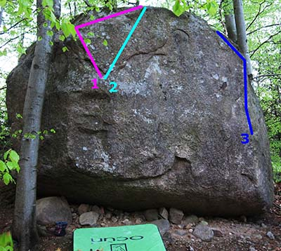
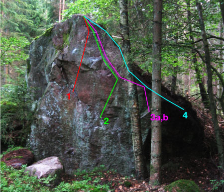
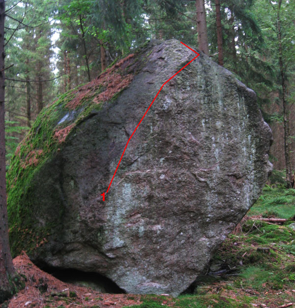
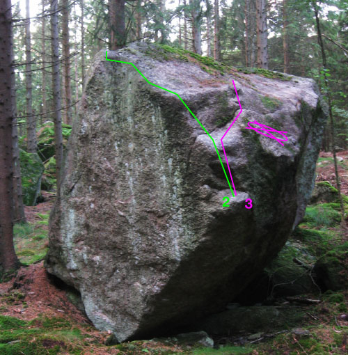
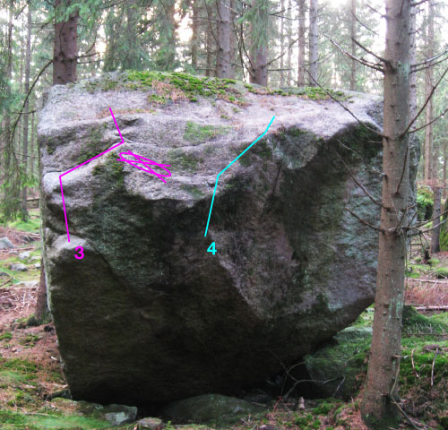
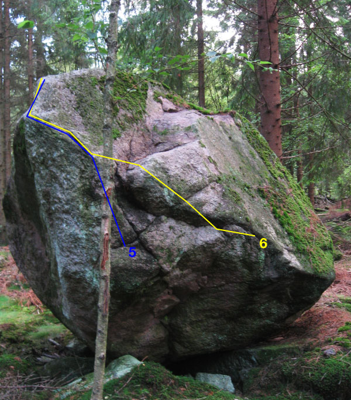
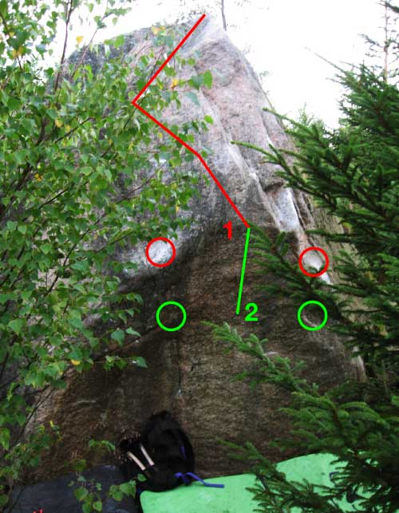
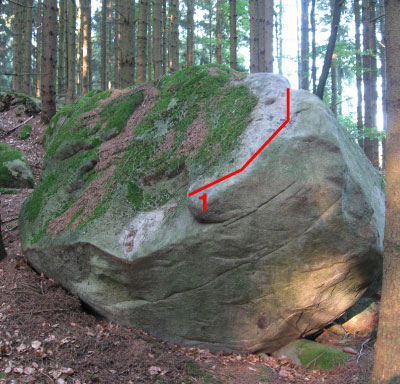
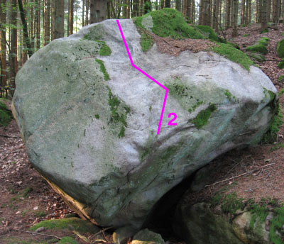

På åsen sydväst om Degeberga (vägen mellan Forsakar och Vallarum) finns ett område med ett antal block. Observera att området är utspritt, inte så högt (1,8-4 m) och absolut inte värt ett omväga besök, men om du råkar vara i närheten eller har vägarna förbi kan det vara värt besväret. På
hittar du en karta med alla problem. Glöm inte att göra en fästingkontroll efteråt.
Området ägs till största delen av Sveaskog. De flesta blocken ligger långt från bebyggelse men självklart råder jag alla besökare att hålla låg profil. Kör långsamt på skogsvägarna. Observera att periodvis sker mycket jakt i markerna. Ser ni jaktlag eller en samling bilar parkerade råder jag er att hitta nya klättringsmål för dagen. Framförallt – respektera naturen!
Länk till högupplöst pdf-

Områdets primära och högsta block (ca 4 m). Ligger utmed vägen.
Ca 3 m höjd. En av de finare blocken med mycket fina problemet Blåbärsmuffins/Variant
Områdets finaste block (ca 3 m). Myror i överflöd.
   Hyfsat högt block för att vara Högås (ca 3 m). Huvudsak slab men östra sidan hyser ett finare svagt överhängsproblem. Mygg, knott och flugor i massor under sommaren. Blocket kräver en liten promenad i något svårtillgänglig och bitvis blöt terräng. Se rekommenderad väg (streckad linje) på översiktskartan. Parkera bilen på plant utrymme bredvid vägen i skogsdungen enligt översiktskartan. Gå österut genom granskogen (i gränsen mellan de höga träden och den slyväxta nyplanteringen). Efter 30 meter passerar du en liten bäck och fortsätter ytterligare 70 meter där du viker av söderut och kommer fram till en stor sten brevid en annan bäck. Gå 10 meter västerut så hittar du en gammal skogsväg som du följer söderut. Gå ca 50 meter till kullen - nu skymtar du Djungelblocket ett tiotal meter till öster.
Riktig lowball (1,8 m)
 Lite lägre block (2,5 m).
Copyright (C) Permission is granted to copy, distribute and/or modify this document under the terms of the GNU Free Documentation License, Version 1.3